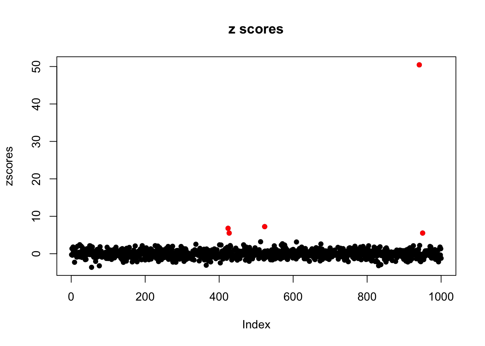
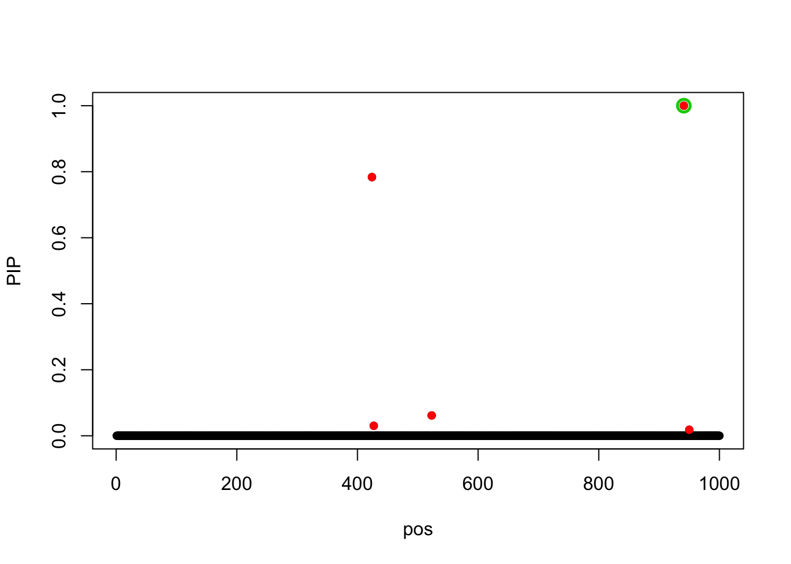

SuSiE vs DAP: data 31_35 (lower power)
Yuxin Zou
2018-02-26
Last updated: 2019-03-03
workflowr checks: (Click a bullet for more information)-
✔ R Markdown file: up-to-date
Great! Since the R Markdown file has been committed to the Git repository, you know the exact version of the code that produced these results.
-
✔ Environment: empty
Great job! The global environment was empty. Objects defined in the global environment can affect the analysis in your R Markdown file in unknown ways. For reproduciblity it’s best to always run the code in an empty environment.
-
✔ Seed:
set.seed(20190115)The command
set.seed(20190115)was run prior to running the code in the R Markdown file. Setting a seed ensures that any results that rely on randomness, e.g. subsampling or permutations, are reproducible. -
✔ Session information: recorded
Great job! Recording the operating system, R version, and package versions is critical for reproducibility.
-
Great! You are using Git for version control. Tracking code development and connecting the code version to the results is critical for reproducibility. The version displayed above was the version of the Git repository at the time these results were generated.✔ Repository version: 54c9661
Note that you need to be careful to ensure that all relevant files for the analysis have been committed to Git prior to generating the results (you can usewflow_publishorwflow_git_commit). workflowr only checks the R Markdown file, but you know if there are other scripts or data files that it depends on. Below is the status of the Git repository when the results were generated:
Note that any generated files, e.g. HTML, png, CSS, etc., are not included in this status report because it is ok for generated content to have uncommitted changes.Ignored files: Ignored: .DS_Store Ignored: .Rhistory Ignored: .Rproj.user/ Ignored: .sos/ Ignored: data/.DS_Store Ignored: output/.DS_Store Untracked files: Untracked: analysis/SuSiERobustNum.Rmd Untracked: data/random_data_31.rds Untracked: data/random_data_31_sim_gaussian_35.rds Untracked: data/random_data_31_sim_gaussian_35_get_sumstats_1.rds Untracked: data/small_data_46.rds Untracked: data/small_data_46_sim_gaussian_10.rds Untracked: data/small_data_46_sim_gaussian_10_get_sumstats_2.rds Untracked: docs/figure/test.Rmd/ Untracked: output/dscoutProblem475.rds Untracked: output/dscoutProblem75.rds Untracked: output/finemap_compare_random_data_null_dscout.rds Untracked: output/finemap_compare_random_data_signal_dscout.rds Untracked: output/finemap_compare_small_data_signal_dscout.rds Untracked: output/finemap_compare_small_data_signal_dscout_RE8.rds Untracked: output/random_data_100_sim_gaussian_null_1_get_sumstats_1_finemap_1.rds Untracked: output/random_data_76.rds Untracked: output/random_data_76_sim_gaussian_8.rds Untracked: output/random_data_76_sim_gaussian_8_get_sumstats_1.rds Untracked: output/small_data_42_sim_gaussian_36_get_sumstats_2_susie_z_2.rds Untracked: output/small_data_92_sim_gaussian_30_get_sumstats_2_susie_z_2.rds Unstaged changes: Modified: analysis/Problem475.Rmd Modified: analysis/SusieZPerformance.Rmd Modified: analysis/SusieZPerformanceRE3.Rmd Modified: output/dsc_susie_z_v_output.rds
Expand here to see past versions:
library(susieR)
X = readRDS('data/random_data_31.rds')$X
R = cor(X)
data = readRDS('data/random_data_31_sim_gaussian_35.rds')
y = data$Y
beta = data$meta$true_coef
sumstats = readRDS('data/random_data_31_sim_gaussian_35_get_sumstats_1.rds')
zscores = sumstats$sumstats$bhat/sumstats$sumstats$shat
plot(zscores, pch=16, main='z scores')
pos = 1:length(zscores)
points(pos[beta!=0],zscores[beta!=0],col=2,pch=16)
Expand here to see past versions of unnamed-chunk-1-1.png:
| Version | Author | Date |
|---|---|---|
| 34a380e | zouyuxin | 2019-03-03 |
susie_plot(zscores, y = "z", b = beta, main='p values from z scores')
Expand here to see past versions of unnamed-chunk-1-2.png:
| Version | Author | Date |
|---|---|---|
| 34a380e | zouyuxin | 2019-03-03 |
We randomly generated 1200 by 1000 matrix X, each entry is random from N(0,1). The variables are independent. There are 5 signals in the simulated data, total PVE is 0.8. The true signals are 424, 427, 523, 941, 950.
fit_z = susie_z(zscores, R, track_fit = TRUE)
susie_plot(fit_z, y='PIP', b=beta)
Expand here to see past versions of unnamed-chunk-2-1.png:
| Version | Author | Date |
|---|---|---|
| 34a380e | zouyuxin | 2019-03-03 |
Using susie z, we only find one signal.
The estimated prior variances are
Vs = matrix(0, 5, 10)
residual_variance = numeric(5)
for(i in 1:length(fit_z$trace)){
Vs[i,] = fit_z$trace[[i]]$V
residual_variance[i] = fit_z$trace[[i]]$sigma2
}
Vs[5, ] = fit_z$V
residual_variance[5] = fit_z$sigma2
row.names(Vs) = paste0('Iter ', 1:5)
colnames(Vs) = paste0('L', 1:10)
cbind(Vs, residual_variance) L1 L2 L3 L4 L5 L6 L7 L8 L9 L10
Iter 1 0.200 0.20000 0.20000 0.20000 0.2 0.2 0.2 0.2 0.2 0.2
Iter 2 2544.129 44.74233 31.44751 26.07864 0.0 0.0 0.0 0.0 0.0 0.0
Iter 3 2525.683 37.14874 0.00000 0.00000 0.0 0.0 0.0 0.0 0.0 0.0
Iter 4 2542.716 37.02038 0.00000 0.00000 0.0 0.0 0.0 0.0 0.0 0.0
Iter 5 2541.647 36.99735 0.00000 0.00000 0.0 0.0 0.0 0.0 0.0 0.0
residual_variance
Iter 1 1.000000
Iter 2 2.306961
Iter 3 2.372394
Iter 4 2.373581
Iter 5 2.373607The result from DAP is DAP result.
Session information
sessionInfo()R version 3.5.1 (2018-07-02)
Platform: x86_64-apple-darwin15.6.0 (64-bit)
Running under: macOS 10.14.3
Matrix products: default
BLAS: /Library/Frameworks/R.framework/Versions/3.5/Resources/lib/libRblas.0.dylib
LAPACK: /Library/Frameworks/R.framework/Versions/3.5/Resources/lib/libRlapack.dylib
locale:
[1] en_US.UTF-8/en_US.UTF-8/en_US.UTF-8/C/en_US.UTF-8/en_US.UTF-8
attached base packages:
[1] stats graphics grDevices utils datasets methods base
other attached packages:
[1] susieR_0.6.4.0454
loaded via a namespace (and not attached):
[1] workflowr_1.1.1 Rcpp_1.0.0 lattice_0.20-38
[4] digest_0.6.18 rprojroot_1.3-2 R.methodsS3_1.7.1
[7] grid_3.5.1 backports_1.1.3 git2r_0.24.0
[10] magrittr_1.5 evaluate_0.12 stringi_1.2.4
[13] whisker_0.3-2 R.oo_1.22.0 R.utils_2.7.0
[16] Matrix_1.2-15 rmarkdown_1.11 tools_3.5.1
[19] stringr_1.3.1 yaml_2.2.0 compiler_3.5.1
[22] htmltools_0.3.6 knitr_1.20 This reproducible R Markdown analysis was created with workflowr 1.1.1